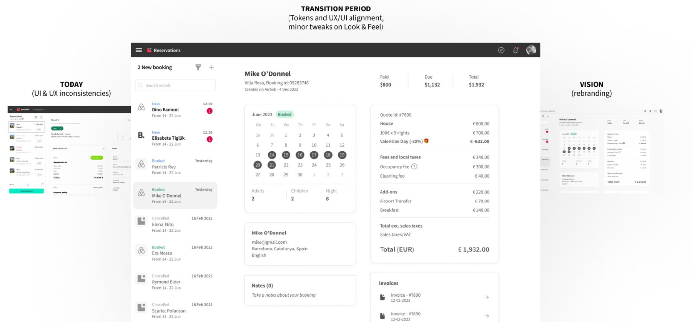
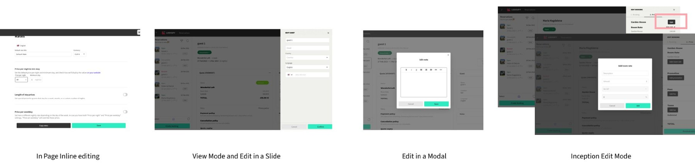
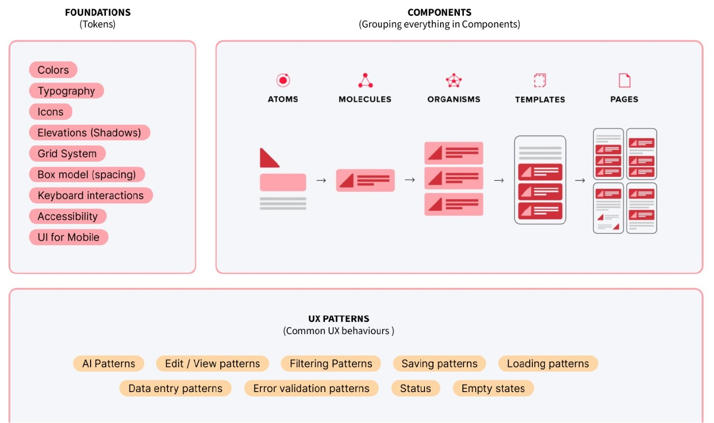
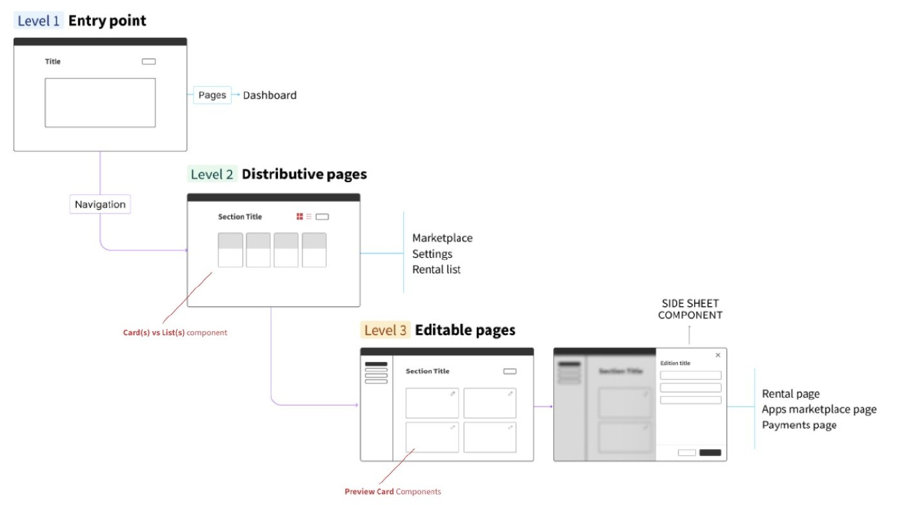
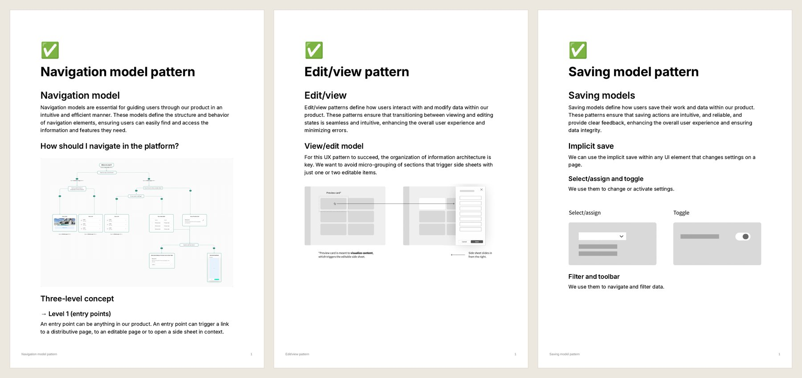
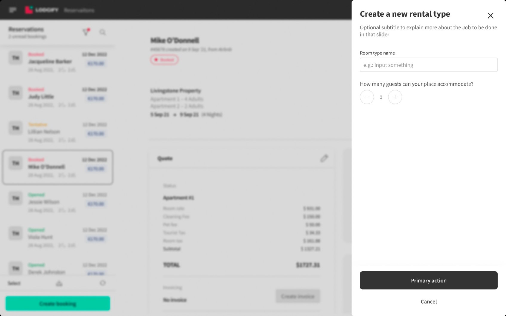

Garden: one system, one language, for a ten-year-old platform.

Lodgify is a successful B2B platform for vacation-rental hosts, about ten years old when I joined. It had two designers covering the whole product, no design system and no shared source of truth. Every screen was reinvented.
I led Garden, Lodgify’s design system, end to end: the information architecture, the UX patterns, and the team I grew around it from 2 to 10.
Lodgify needed one language for its user experience, because every squad was solving the same problems differently, and the product felt inconsistent to the people using it.
Designers had no guidelines to follow. Design and development kept reinventing the wheel. PM, design and front-end didn’t speak the same language. Editing data alone worked four different ways:

A design system is more than components. It’s how we design at Lodgify, and how the world perceives us as a product. Garden’s hardest problem wasn’t design. It was convincing a ten-year-old company to bet on it, so I sequenced the work deliberately.
Four principles, each tied to the patterns that deliver it:
Foundations (tokens) feed components, built atomically from atoms to pages. On top sits the layer that makes Garden more than a component library: UX patterns, the common behaviours every squad reuses.

Every screen in Lodgify maps to one of three levels: entry points, distributive pages and editable pages. Editing happens in a side sheet, next to the content it changes. That single rule replaced the four ways of editing.

I personally authored 26 UX patterns: navigation, discoverability, create, edit/view, delete, forms, error validation, notifications, saving, loading, status, filtering, search, table vs. list, empty states, responsive and mobile, and more. Each is the single answer to a recurring question, documented and versioned.


Garden became the operational backbone for both Lodgify’s AI features and its full brand relaunch. When we designed the AI Co-Host, we extended Garden with 12 new AI-state components instead of starting from scratch.
“The Design System is one of the most critical assets we have as we scale Lodgify 2.0. It’s the backbone that allows us to move faster, stay consistent, and deliver high-quality experiences at scale.”
Chief Product & Design Officer, Lodgify